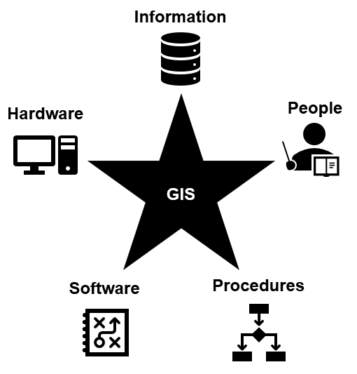

Geomatics
Geomatics is the interdisciplinary field that focuses on the collection, analysis, and interpretation of data relating to the Earth's surface. It's a bridge between geography and information technology, combining knowledge and techniques from both. Here's a snapshot of what it encompasses:
- Surveying & Mapping: This involves measuring and mapping the physical features of the Earth's surface. Techniques such as GNSS (Global Navigation Satellite Systems), total stations, and laser scanning are frequently used.
- Geographic Information Systems (GIS): This is about managing and analyzing spatial data. GIS technology allows for the visualization, interpretation, and understanding of data patterns and relationships in a variety of fields like urban planning, disaster management, and environmental science.
- Remote Sensing: The use of satellite or aerial imagery to collect information about the Earth's surface. It involves capturing data from sensors, which is then processed to monitor and analyze the environment.
- Cartography:The art and science of map-making. It involves the creation of maps to accurately and aesthetically represent spatial data.
- Geodesy: This is the science of measuring and understanding the Earth's geometric shape, orientation in space, and gravity field. It provides the fundamental data needed for mapping and navigation.
Geomatics is critical in fields such as urban development, environmental monitoring, resource management, and defense. It aims to provide efficient and accurate spatial data solutions, which are crucial in making informed decisions.
A Geographic Information System (GIS) is a collection of five inter-connected, inter-acting, and inter-dependent components.
